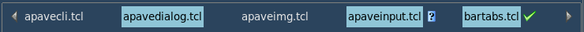

Table of Contents
What is this
It's all about a bar of tabs. Or a tab bar if you like it more.
The tab bars are widely used in various editors, e.g. in TKE, Geany, Kate, Pluma, all very good for Tcl/Tk programming, btw.
If you need a Tcl/Tk widget similar to the tab bars of those editors, you might try bartabs.
The bartabs is a tab bar widget with a lot of options. It can be used as an independent widget or along with apave package as bts widget.
Introduction
The bartabs package provides Tcl/Tk widget containing tabs that are
- scrollable
- markable
- moveable
- closeable
- disabled and enabled
- static and changeable
- selectable and multi-selectable
- configureable
- enhanceable with popup menu
A common appearance of bartabs is below:
Here the details are:
- the current file is test2_pave.tcl
- its full name is displayed by a caller of bartabs
- currently hovered file is test_pavedialog.tcl
- its name is displayed short, due to the -lablen 16 option
- so, its real name is displayed by bartabs in the tip
- its tab has Close button at the right
- Scroll left and Scroll right buttons are at both edges of bartabs
- Scroll right button is disabled, as there are no tabs beyond the right edge
A bit customized versions of bartabs may look like the following.

Here the details are:
- a color scheme is changed
- the hovered tab has no tip, as its label isn't shortened
- Scroll right button is enabled, as two tabs were scrolled to the right
Here the details are:
- tabs have no border due to -bd 0 option
- bartabs got -static yes option, so the hovered tab has not Close button
Here the details are:
- bartabs is made -static no -bd 1 again
- currently edited file is underlined instead of blue background, due to -fgsel {} option
- some tabs are marked with magenta foreground, meaning "modified" or similar

Here the details are:
- bartabs got -imagemark option, so the tabs are marked with an image
- if not marked or hovered, the tabs can show its own images

Here the details are:
- tabs can be multi-selected with Ctrl+Click
- thus, the caller of bartabs can handle the batch of tabs

Here the details are:
- handlers can be called using hot keys or a popup menu bound to bartabs
- by default, the menu actions include: 1) choosing a tab 2) moving a tab 3) closing tab(s)
- the list of tabs contains three separated tab lists: the invisible at left, the visible, the invisible at right
- a tab can be moved with drag-and-drop or with "... behind" menu action
- static (-static yes) bartabs has no actions except for choosing a tab
- even for static bartabs, its caller can provide additional menu actions and submenus
Calling bartabs
The commands to call bartabs are as simple as:
after idle [list NS::fillBar $wframe]or
after 10 [list NS::fillBar $wframe]or
update NS::fillBar $wframewhere:
- NS::fillBar is a caller that should create a bar of tabs and call a method of bartabs to show the bar; there are a few of such methods
- wframe is a path to a parent widget that should hold bartabs, most likely a frame
However, before calling any NS::fillBar it's necessary to create bartabs::Bars object, one for all possible bars:
bartabs::Bars create NS::bars
The NS::fillBar usually contains a code similar to:
# make a list of main options
set barOptions [list -wbar $wframe -wbase .somepath \
-csel {NS::selTab %t} -cdel {NS::delTab %t} \
-menu [list sep "com {New tab...} {NS::addTab %b}"]
# add tabs' labels
foreach lbl $labels {lappend barOptions -tab $lbl}
# create the bar
NS::bars create NS::bar $barOptions
# show the bar with $label1 as a current tab
set TID [NS::bar tabID $label1]
NS::bar $TID show
Before closing the application, a clearance is necessary:
NS::bars destroy
The details about all these Bars, NS::bars, TID etc. are considered below.
Interface
For the full list of bartabs interface methods and their sources, please refer to Reference.
The bartabs defines three TclOO classes:
- Tab deals with tabs
- Bar deals with a bar of tabs
- Bars deals with bars of tabs
However, only the Bars class is used to create bars along with tabs. It can be also used to deal with any bars and tabs, providing all necessary interface.
The Bar does not create a real TclOO object, rather it is sort of syntax sugar for a convenient access to the bar methods. An application can create and handle as many bars as required.
The Tab does not create a real TclOO object as well. It serves actually for structuring bartabs code as for tab methods. Thus, its methods are accessible through the bars ("real" TclOO) and bar ("sugar") objects.
A common work flow with bartabs looks like this:
1) Firstly, we create a bartabs::Bars object, e.g.
bartabs::Bars create NS::bars
2) Then we create a bar object passing it a list of bar options, e.g.
NS::bars create NS::bar $barOptions
3) At last, we show the bar and select a tab as the current:
set TID [NS::bar tabID "tab label"] ;# get a tab's ID by its label NS::bar $TID show ;# show the bar and select the tab
or just draw the bar without mind-breaking about its tabs:
NS::bar draw ;# show the bar without selecting a tab
4) The rest actions include:
- responses to a selection of tab (through
-csel commandoption of Bar object) - responses to a deletion (closing) of tab (through
-cdel / -cdel2 commandoption of Bar object) - responses to a reorganization of bar (through
-cmov / -cmov2 commandoption of Bar object) - inserting and renaming tabs
- disabling and enabling tabs
- marking tabs with colors or icons
- processing the marked tabs
- processing multiple tabs selected with Ctrl+click
- scrolling tabs to left/right through key bindings
- calling other handlers through key bindings and bartabs menu
- using
cgetandconfiguremethods to change the bar/tab appearance - redrawing bars at some events
- removing and creating as much bars as required
Few words about BID and TID mentioned throughout the bartabs.
These are identifiers of bars and tabs, of form bar<index> and tab<index> where <index> is an integer increased from 0 in order of bar/tab creation. The bars and the tabs of all bars have unique IDs.
You can use these literals freely, along with BIDs and TIDs gotten from bartabs methods. For example, if you know that "some tab" was created third, you can show it straightforward:
NS::bar tab2 show ;# show the 3rd tab (TID=tab2)
instead of
NS::bar [NS::bar tabID "some tab"] show ;# find and show the tab by its name
The "sugariness" of NS::bar consists in its being equivalent to NS::bars $BID, just to save words and avoid typos.
There is also a "sugar" for tabs:
NS::bar create NS::tab "some label"which creates NS::tab object for the tab labeled "some label", just to run its methods, for example:
NS::bar create NS::tabMain "a boss tab" ;# create a tab object by the tab's label NS::tabMain configure -text "me the boss" ;# a new boss enters NS::tabMain show ;# the tab object didn't change its TID NS::bar create NS::tabMeBoss "me the boss" ;# it's the same TID NS::tabMeBoss close ;# closes NS::tabMain too
Note: The tabs can be of the same name only when they belong to different bars. Inside a bar the tabs should have unique names. If some names are going to be equal you can supply them with prefixes or suffixes, sort of "subdir/", "(2)", "(copy 1)" etc. The tabID method helps to get a tab's ID by its label.
Below is a short description of bartabs classes and methods. For more details, please refer to Reference.
bartabs::Tab
The methods of bartabs::Tab class are called from NS::bars or NS::bar object and are passed: tab ID (TID), method name, arguments.
Syntax:
OBJECT TID method arguments
For example:
NS::bars $TID show false NS::bar $TID closeor using a tab object:
NS::bar create NS::tab "tab label" NS::tab show NS::tab close
| Method | Description |
|---|---|
| show | Shows a tab in a bar and sets it current. |
| close | Closes (deletes) a tab and updates the bar. |
bartabs::Bar
The methods of bartabs::Bar class are called from NS::bar object or (more wordy) from NS::bars object.
Syntax:
BAR_OBJECT method arguments BARS_OBJECT BID method arguments
For example:
NS::bar popList $X $Y NS::bars $BID popList $X $Y
| Method | Description |
|---|---|
| cget | Gets values of options. Used for bars & tabs. |
| configure | Sets values of options. Used for bars & tabs. |
| create | Creates a tab "sugary" object to access the tab's methods. Example:NS::bar create NS::tab "tab label" |
| insertTab | Inserts a tab into a bar. |
| tabID | Gets TID by tab's label. |
| draw | Draws the bar tabs. Used at changing the visible contents. |
| update | Updates the bar in "hard" way. |
| scrollLeft | Scrolls the bar tabs to the left. |
| scrollRight | Scrolls the bar tabs to the right. |
| clear | Forgets (hides) the currently shown tabs of a bar. |
| listTab | Gets a list of bar tabs. |
| listFlag | Gets a list of bar tabs with flags "visible", "marked", "selected", "disabled". |
| popList | Shows a stand-alone popup menu of tabs. |
| remove | Removes a bar info from btData dictionary and destroys it. |
bartabs::Bars
The methods of bartabs::Bars class are applied to all of registered bars.
Syntax:
BARS_OBJECT method arguments
For example:
NS::bars drawAll NS::bars markTab tab11 tab99
| Method | Description |
|---|---|
| create | Creates a tab bar. |
| drawAll | Redraws all tab bars. |
| updateAll | Updates all tab bars in "hard" way. |
| moveTab | Moves a tab to a new position. |
| markTab | Marks tab(s) in bars. Can be used also by NS::bar and NS::tab "sugary" objects. |
| unmarkTab | Unmarks tab(s) in bars. Can be used also by NS::bar and NS::tab "sugary" objects. |
selectTab | Selects tab(s) in bars. Can be used also by NS::bar and NS::tab "sugary" objects. |
| unselectTab | Unselects tab(s) in bars. Can be used also by NS::bar and NS::tab "sugary" objects. |
| disableTab | Disables tab(s) in bars. Can be used also by NS::bar and NS::tab "sugary" objects. |
| enableTab | Enables tab(s) in bars. Can be used also by NS::bar and NS::tab "sugary" objects. |
| isTab | Checks if a tab object exists. Can be used also by NS::bar and NS::tab "sugary" objects. |
| removeAll | Removes all tab bars. |
Options
The following conventions are accepted:
BID means a bar's ID
TID means a tab's ID
NS::bars means a bartabs::Bars object created with TclOO
NS::bar means a bar object created with NS::bars object
Below are listed the options of NS::bar.
| Option | Description | Usage |
|---|---|---|
| -wbar | parent widget of the bar; it's a widget (most likely a frame) to hold the bar's tabs Note: this option is obligatory | example:-wbar .win.framain.frabts |
| -wbase | base widget whose width defines the width of the bar | example:
-wbase .win.editorin most cases, this option suffices to define the width of bartabs widget at the resizing |
| -wproc | Tcl/Tk code to calculate the bar's width; the option can include %b to be replaced with BID Note: this option is used along with -wbase optionwhich sets a base widget to watch the bar's resizing | the option can be as simple as following:
-wproc {winfo width .win.mframe.text1}
or more complex:
proc NS::btsWidth {BID w1 w2} {
# w1, w2 are widgets restricting the bar's width
set bl [expr {[winfo width $w1]-[winfo width $w2]-40}]
# a condition could mess up
if {$NS::condition} {incr bl [$NS::proc $BID]}
return $bl
}
NS::bars create NS::bar [list -wbar $wbar \
-wproc [list NS::btsWidth %b $wmain $wleft] -tab Noname] |
| -static | disables closing and moving the tabs by bartabs | by default:-static no |
| -hidearrows | hides the scrolling arrows instead of disabling them | by default:-hidearrows nouse this option carefully: hiding arrows is good for static bars with few tabs |
| -expand | expands tabs to fill the bar | by default:-expand no |
| -tab | label of tab; a sequence of -tab and -imagetab options defines a tab listNote: the label must be unique throughout the bar it belongs to | -tab {First item} -tab {Second item} |
| -imagetab | label of tab and image; a sequence of -tab and -imagetab options defines a tab listNote: the label must be unique throughout the bar it belongs to | -imagetab {{First item} img1} -imagetab {{Second item} img2} |
| -tabcurrent | ID of current tab; this option is read only;
despite that many tabs may be selected with Ctrl+Click, only one tab is the current tab | by default:-tabcurrent -1i.e. no current tab, no related info show and listFlag methods deal with this option |
| -listlen | length of tab list; this option is read only | |
| -scrollsel | if "yes", a current tab position is scrolled with the arrow buttons if "no" a left/right tab is scrolled with the arrow buttons | by default:-scrollsel yes |
| -tleft | index of left tab to display | by default:-tleft 0 |
| -tright | index of right tab to display | by default:-tright endi.e. as many tabs are displayed as the bar can hold |
| -csel, -csel2 | commands called before and after displaying the selected tab; the second (-csel2) command may be time-consuming: this separation helps to display the tab without blinking | three placeholders may be set in the option value:
%b - BID, %t - TID, %l - label
for example: -csel {NS::btsSel %b %t} -csel2 {NS::btsSel2 %b %t} |
| -cmov, -cmov2, -cdel, -cdel2 | commands called before and after moving and closing a tab | -cmov, -cdel commands should return 1 / yes / true to enable the action, 2 to disable, 0 to cancel; three placeholders may be set in the option value: %b - BID, %t - TID, %l - label
for example: -cdel {NS::btsDel %b %t {%l}} |
| -menu | list of additional popup menu items containing: 1) type goes first: c - command, m - cascade menu, s - separator 2) menu label 3) menu command or {} 4) submenu name or {} 5) disabling command or {} where the optional disabling command takes three arguments: BID, TID, tab label and returns a list of maximum 4 items:
|
...
-menu [list \
s \
"c {Add
Here we have two disabling options: by a command ::NS::isDisableTab and by a list {0 imgSW {%l} Ctrl+B}.
Note: the disabling command must be fully qualified. |
| -mark, -disable, -select | list of marked, disabled or selected tabs' IDs | these option can be used to save and restore the list of marked, disabled or selected tabs:set savedmarks [NS::bar cget -mark] ... NS::bar configure -mark $savedmarks NS::bar draw |
| -fgmark, -bgmark | fore- and background of tabs marked with markTabwhich is controlled by the application e.g. to mark the modified tabs | by default:-fgmark #800080 -bgmark ""i.e. only foreground will be marked; this option depends on a color scheme in use (see e.g. test2_pave.tcl of apave package) |
| -imagemark | image for tabs marked with markTabwhich is controlled by the application e.g. to mark the modified tabs; this option overcomes -fgmark, -bgmark options (see above) | by default:-imagemark ""i.e. -fgmark, -bgmark options are active |
| -fgsel, -bgsel | attributes for selection:
| by default:-fgsel "." -bgsel ""i.e. the colors are taken from [ttk::style configure .]
examples: 1) -fgsel white -bgsel red 2) -fgsel .main 3) -fgsel ""
this option depends on a color scheme in use (see e.g. test2_pave.tcl of apave package) |
| -font | font attributes of tab labels | by default:-font [font configure TkDefaultFont] |
| -relief | relief of tabs | by default:-relief groove |
| -padx, -pady | padding of tab | by default: -padx 1 -pady 1 |
| -bd | border of tab (0 or 1) | by default:-bd 0 |
| -separator | draws a separator under a bar of tabs | by default:-separator 1 |
| -lablen | maximum of tab label's length;0means no limit | by default:-lablen 0
this option sets also the tips for shortened labels |
| -dotip | setting -dotip yes forces tips of scrolling arrows | by default:-dotip no |
| -tiplen |
0means "no limit for both"; -1means "no tips" and "no limit for lines" | by default:-tiplen 0when you put 30-40 or more tabs into a bar, this option would help; however, for more than 50 tabs bartabs is not an adequate widget; try treeview / tablelist instead see also -lowlist option below |
| -lowlist | -lowlist no / yes sets normal / low height of the tab lists of popup menu | by default:-lowlist nothe -lowlist yes option makes sense for the themes with large font sizesee also -tiplen option above |
The NS::bar configure and NS::bar cget methods are used to set and get the bar options. For example, you can run
lassign [NS::bar cget -tleft -tright] tleft tright ... NS::bar configure -tleft $tleft -tright $tright NS::bar clear NS::bar drawto show your tabs within the saved range.
There are also two analogue methods NS::bar TID configure and NS::bar TID cget to set and get the tab options however few they are:
-textsets a tab label's text-tipsets a tab label's tip (overcoming -lablen option)
That said, these methods may be useful to store and fetch your own options, i.e. any data related to your bars and tabs. Sort of little data bases.
For some examples of using bartabs options, please refer to test.tcl of bartabs.zip or test2_pave.tcl of apave package.
Tips and hints
How to make the bartabs be resizable?
At calling bartabs, the calculation of bar width may present a problem. Though, if a bar is created from scratch it may contain a "noname" tab or no tabs at all which would hardly set a problem.
But when the bartabs is called with a batch of tabs e.g. fetched from a previous session, it should be supplied with a maximum of bar width to place the tabs. In general, only a part of tabs can be placed on a bar widget, as its width is usually restricted by another widget, mostly by a contents editor (text, layout, picture, map etc.).
Theafter idle (or after 10) allows to call bartabs at the moment when the restricting widget has been highly likely updated, so that bartabs can get its geometry and calculate a room to hold the tabs. Having done this calculation, bartabs will place on the bar as many tabs as its room allows. Also, the bartabs would be able to recalculate its width at resizing the restricting widget.
The described above -wbase and -wproc options allow to calculate the bar width dynamically:
- -wbase sets a path to a widget whose width should restrict the bar width; in most cases its width is equal to the width of the bar
- -wproc sets a procedure that calculates the bar width in more peculiar surroundings
There are few methods to show a bar. What's the best?
The typical use cases are as follows:
1) Some tabs were renamed. Then the best method is show applied to any of renamed tabs:
NS::tab1 configure -text "Text of tab1" NS::tab2 configure -text "Text of tab2" NS::tab1 showor the "mild" updating:
NS::bar clear NS::bar draw
2) A range of visible tabs should be changed. Then the best way is clear and draw:
NS::bar configure -tleft $tleft -tright $tright NS::bar clear NS::bar draw
3) An important bar option (like -static, -hidearrows) was changed. Then the best way is the "hard" updating with update method:
NS::bar configure -static yes NS::bar update
4) Two special methods allow you to scroll tabs to the left/right. The appropriate key bindings may launch them:
NS::bar scrollLeft NS::bar scrollRightProbably, this programmable scrolling makes only sense with
-scrollsel yes option.
When to use -static, -hidearrows, -expand options?
These options aren't compatible fine in all cases, so use them carefully.
Below is the list of possible use cases.
| static | hidearrows | expand | Usage |
|---|---|---|---|
| no | no | no | default, standard usage good when the -wbar widget has -fill x option |
| no | no | yes | as previous, except for tabs expanded not good when tabs are few |
| yes | yes | no | static bar like ttk::notebook
good only when all tabs are visible (scrolling arrows hidden) |
| yes | yes | yes | static bar like ttk::notebook, just with expanded tabs good only when all tabs are visible (scrolling arrows hidden) |
| yes | no | yes | static bar like ttk::notebook with scrolling arrows
good for a long list of tabs (options, preferences etc.) |
| no | yes | yes | changeable bar, the tabs expanded
good only when all tabs are visible (scrolling arrows hidden) not good at scrolling because it's possible to click on a tab instead of a scrolling arrow |
| no | yes | no | changeable bar, the tabs not expanded
good only when all tabs are visible (scrolling arrows hidden) |
| yes, no | no | no | if -wbar widget hasn't -fill x option, this setting makes no sense probably see e.g. in test.tcl of bartabs.zip how 2nd bar behaves |
Note: -static yes does not forbid you to add, remove or mark the tabs programmably. It's the user who cannot change the static bars.
Download
bartabs stuff is available here:
- bartabs.zip
-
See also
- Reference
- demo of bartabs v1.1.1 (11 min., 29 Mb), with test.tcldemo of bartabs v1.0 (5 min., 21 Mb), with test2_pave.tcl
- apave package: includes test2_pave.tcl, an example of bartabs usage
- TKE editor: includes tabbar.tcl, Tcl/Tk tab bar widget
- advantages: Tk canvas with animation, clever code
- disadvantages: a bit buggy, might have more options
-